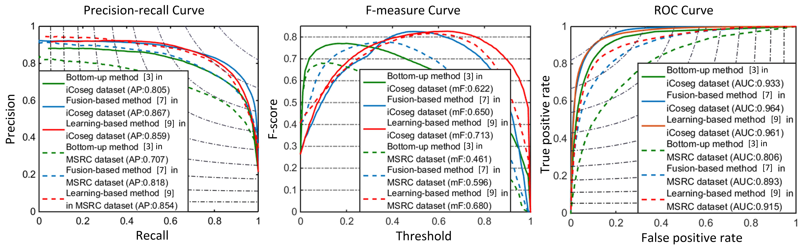
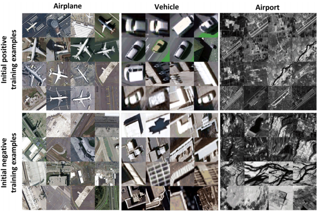

|
Dingwen Zhang, Junwei Han, Gong Cheng, and Ming-Hsuan Yang: Weakly Supervised Object Localization and Detection: A Survey. IEEE Transactions on Pattern Analysis and Machine Intelligence (T-PAMI), 2021.
| [PaperLink] |
|
Yi Liu, Dingwen Zhang, Qiang Zhang, Jungong Han: Part-Object Relational Visual Saliency. IEEE Transactions on Pattern Analysis and Machine Intelligence (T-PAMI), 2021.
Yi Liu, Qiang Zhang, Dingwen Zhang, Jungong Han: Employing deep part-object relationships for salient object detection. Proceedings of the IEEE/CVF International Conference on Computer Vision (ICCV), 2019. |
[PaperLink] |
|
Dingwen Zhang, Bo Wang, Gerong Wang, Qiang Zhang, Jiajia Zhang, Jungong Han, Zheng You: Onfocus Detection: Identifying Individual-Camera Eye Contact from Unconstrained Images. SCIENCE CHINA Information Sciences, 2021. |
[PaperLink][Dataset and Code] |
|
Deng-Peng Fan, Tengpeng Li, Zheng Lin, Ge-Peng Ji, Dingwen Zhang, Ming-Ming Cheng, Huazhu Fu, Jianbin Shen: Re-thinking co-salient object detection. IEEE Transactions on Pattern Analysis and Machine Intelligence (T-PAMI), 2021.
Deng-Ping Fan, Zheng Lin, Ge-Peng Ji, Dingwen Zhang, Huazhu Fu, Ming-Ming Cheng: Taking a Deeper Look at Co-Salient Object Detection. IEEE Conference on Computer Vision and Pattern Recognition (CVPR), 2020. |
[Project][Chinese version] |
 |
Dingwen Zhang, Junwei Han, Yu Zhang, Dong Xu: Synthesizing Supervision for Learning Deep Saliency Network without Human Annotation. IEEE Transactions on Pattern Analysis and Machine Intelligence (T-PAMI), 2020.
Dingwen Zhang, Junwei Han, Yu Zhang: Supervision by Fusion: Towards Unsupervised Learning of Deep Salient Object Detector. IEEE International Conference on Computer Vision (ICCV), 2017. |
[PaperLink][Code] |
 |
Dingwen Zhang, Junwei Han, Le Yang, Dong Xu: SPFTN: A Joint Learning Framework for Localizing and Segmenting Objects in Weakly Labeled Videos. IEEE Transactions on Pattern Analysis and Machine Intelligence (T-PAMI), 2020.
Dingwen Zhang, Le Yang, Deyu Meng, Dong Xu, Junwei Han: SPFTN: A Self-Paced Fine-Tuning Network for Segmenting Objects in Weakly Labelled Videos. IEEE Conference on Computer Vision and Pattern Recognition (CVPR), 2017. |
[PaperLink] |
|
Dingwen Zhang, Haibin Tian, Jungong Han: Few-Cost Salient Object Detection with Adversarial-Paced Learning. International Conference on Neural Information Processing Systems (NeurIPS), 2020.
| [Code] |
|
Junwei Han, Yang Yang, Dingwen Zhang, Dong Huang, Dong Xu, Fernando De La Torre: Weakly-Supervised Learning of Category-specific 3D Object Shapes. IEEE Transactions on Pattern Analysis and Machine Intelligence (T-PAMI), 2020.
Dingwen Zhang, Junwei Han, Yang Yang, Dong Huang: Learning Category-Specific 3D Shape Models from Weakly Labeled 2D Images. IEEE Conference on Computer Vision and Pattern Recognition (CVPR), 2017. |
[PaperLink] |
|
Chen Xia, Junwei Han, Dingwen Zhang: Evaluation of Saccadic Scanpath Prediction: Subjective Assessment Database and Recurrent Neural Network Based Metric. IEEE Transactions on Pattern Analysis and Machine Intelligence (T-PAMI), 2020.
| [PaperLink] |
|
Dingwen Zhang, Guohai Huang, Qiang Zhang, Jungong Han, Junwei Han, Yizhou Yu: Deep Multi-Modality Feature Learning for Brain Tumor Segmentation. Pattern Recognition (PR), 2020.
Dingwen Zhang, Guohai Huang, Qiang Zhang, Jungong Han, Junwei Han, Yizhou Wang, Yizhou Yu: Exploring Task Structure for Brain Tumor Segmentation from Multi-modality MR Images. IEEE Transactions on Image Processing (T-IP), 2020. |
|
Dingwen Zhang, Junwei Han, Long Zhao, Duyu Meng: Leveraging Prior-Knowledge for Weakly Supervised Object Detection Under a Collaborative Self-Paced Curriculum Learning Framework. International Journal of Computer Vision, (IJCV), 2019.
Dingwen Zhang, Deyu Meng, Long Zhao, Junwei Han: Bridging Saliency Detection to Weakly Supervised Object Detection Based on Self-paced Curriculum Learning. International Joint Conference on Artificial Intelligence (IJCAI), 2016. |
[PaperLink][Models] |
|
Dingwen Zhang, Junwei Han, Guangyu Guo, Long Zhao: Learning Object Detectors with Semi-Annotated Weak Labels. IEEE Transactions on Circuits and Systems for Video Technology (T-CSVT), 2019.
| [PaperLink] [Code] |
|
Dingwen Zhang, Guangyu Guo, Dong Huang, Junwei Han: PoseFlow: A Deep Motion Representation for Understanding Human Behaviors in Videos. IEEE Conference on Computer Vision and Pattern Recognition (CVPR), 2018. |
[PaperLink][Code] |
|  |
Dingwen Zhang, Huazhu Fu, Junwei Han, Ali Borji, Xuelong Li: A Review of Co-saliency Detection Algorithms: Fundamentals, Applications, and Challenges. ACM Transactions on Intelligent Systems and Technology (TIST), 2018. |
[PaperLink] [Project Page] |
|
Junwei Han, Dingwen Zhang, Gong Cheng, Nian Liu, Dong Xu: Advanced Deep Learning Techniques for Salient and Category-Specific Object Detection: A Survey. IEEE Signal Processing Magazine (SPM), 2018. |
[PaperLink] |
|
Junwei Han, Rong Quan, Dingwen Zhang, Feiping Nie: Robust Object Co-Segmentation Using Background Prior. IEEE Transactions on Image Processing (T-IP), 2018.
Rong Quan, Junwei Han, Dingwen Zhang, Feiping Nie: Object Co-segmentation via Graph Optimized-Flexible Manifold Ranking. IEEE Conference on Computer Vision and Pattern Recognition (CVPR), 2016. |
[PaperLink] |
 |
Dingwen Zhang, Deyu Meng, Junwei Han: Co-Saliency Detection via a Self-Paced Multiple-Instance Learning Framework. IEEE Transactions on Pattern Analysis and Machine Intelligence (T-PAMI), 2017.
Dingwen Zhang, Deyu Meng, Chao Li, Lu Jiang, Qian Zhao, Junwei Han: A Self-Paced Multiple-Instance Learning Framework for Co-Saliency Detection. IEEE International Conference on Computer Vision (ICCV), 2015. |
[Dataset] [Results] [Evaluation Metrics] |
|
Dingwen Zhang, Junwei Han, Lu Jiang, Senmao Ye, Xiaojun Chang: Revealing Event Saliency in Unconstrained Video Collection. IEEE Transactions on Image Processing (T-IP), 2017. |
[PaperLink] |
 |
Dingwen Zhang, Junwei Han, Chao Li, Jingdong Wang, Xuelong Li: Detection of Co-salient Objects by Looking Deep and Wide. International Journal of Computer Vision (IJCV), 2016.
Dingwen Zhang, Junwei Han, Chao Li, Jingdong Wang: Co-saliency Detection via Looking Deep and Wide. IEEE Conference on Computer Vision and Pattern Recognition (CVPR), 2015. |
[Dataset] [Results] |
 |
Dingwen Zhang, Junwei Han, Jungong Han, Ling Shao: Cosaliency Detection Based on Intrasaliency Prior Transfer and Deep Intersaliency Mining. IEEE Transactions on Nerual Networks and Learning Systems (T-NNLS), 2016. |
[Dataset] [Results] |
|
Junwei Han, Dingwen Zhang, Shifeng Wen, Lei Guo, Tianming Liu, Xuelong Li: Two-Stage Learning to Predict Human Eye Fixations via SDAEs. IEEE Transactions on Cybernetics (T-CYB), 2016.
Junwei Han, Dingwen Zhang, Xintao Hu, Lei Guo, Jinchang Ren, Feng Wu: Background Prior-Based Salient Object Detection via Deep Reconstruction Residual. IEEE Transactions on Circuits and Systems for Video Technology (T-CSVT), 2015. |
[Project] |
|  |
Junwei Han, Dingwen Zhang, Gong Cheng, Lei Guo, Jinchang Ren: Object Detection in Optical Remote Sensing Images Based on Weakly Supervised Learning and High-Level Feature Learning. IEEE Transactions on Geoscience and Remote Sensing (T-GRS), 2015.
Dingwen Zhang, Junwei Han, Gong Cheng, Zhenbao Liu, Shuhui Bu, Lei Guo: Weakly Supervised Learning for Target Detection in Remote Sensing Images. IEEE Geoscience and Remote Sensing Letters (GRSL), 2015. |
[Dataset] |